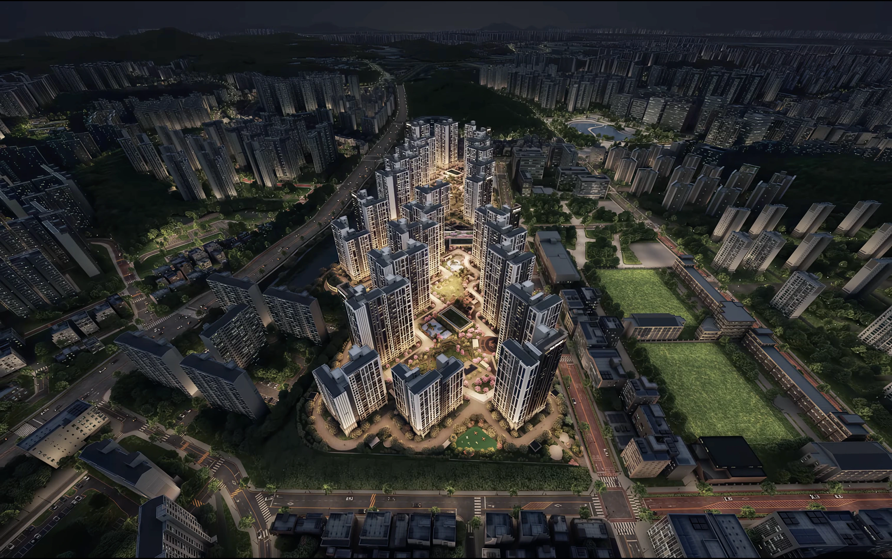

더샵 검단레이크파크입주예정자협의회 공식 홈페이지
위임동의서 접수 현황
여러분의 동의가 협의회의 힘이 됩니다.
접수 현황을 확인하고 위임동의서를 작성해 주세요.

함께 만드는 변화
우리의 목소리로, 더 나은 내일을.

우리 단지 한눈에 보기
우리의 다음 일상이
시작되는 곳.
단지 정보부터 공사 현황, 분양대금조회까지 한곳에서.

나진포천 수변공원 워라밸파크 검단구청 호수공원 초등학교 중학교 더샵 검단레이크파크입예협 소개
의견을 모으고,
함께 준비합니다.
입주예정자의 의견을 모아,
더 나은 입주 환경을 함께 준비하는 창구입니다.
소통주민의 목소리참여함께하는 준비공유공개 활동 안내
소식과 참여
입예협 소식과 참여 안내
입예협의 준비 과정과 참여 방법을 안내합니다.